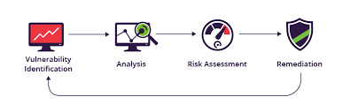

This project enhances the security and reliability of our Ubuntu servers by implementing three key best practices. We establish a strong password management strategy, enforce regular software updates to address vulnerabilities, and utilize centralized log file monitoring to detect and respond to security threats. By integrating robust password policies, automated update processes, and comprehensive logging systems, we aim to fortify our defenses, ensure system integrity, and protect our organization’s assets and reputation.

This project enhances network security by addressing critical vulnerabilities. It includes Network Segmentation to isolate web and data servers, reducing risks of privilege escalation and data theft. Open Ports are secured by proper firewall configuration to prevent various attacks. Password and Lockout Configurations ensure encrypted passwords and access control. Port Security safeguards workstations, servers, and unused ports. Router Hardening involves disabling unnecessary services and setting up IP inspection. Internet Routing is managed with primary and backup routes for reliability. Finally, Access Control Lists filter traffic to protect network interfaces.
In response to evolving security needs, this project focuses on two key enhancements: implementing a VPN service and upgrading firewalls. Cisco AnyConnect is chosen for its broad OS compatibility and user-friendly interface, providing secure remote access for Contoso's expanding remote workforce. Additionally, upgrading to a Cisco ASA Firewall will bolster defenses against cyber threats with advanced threat detection and seamless integration with existing Cisco infrastructure. These upgrades address the need for robust remote connectivity and comprehensive network security, ensuring both reliable operations and protection against emerging cyber threats.